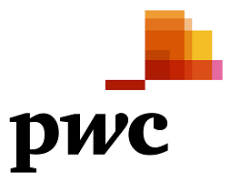
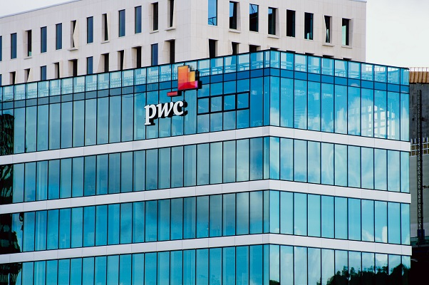

PwC
PricewaterhouseCoopers (trading as PwC) is a multinational professional services network. It is one of the world's largest professional services networks, as measured by 2014 revenues, and is one of the Big Four auditors, along with Deloitte, Ernst & Young (EY) and KPMG.

PwC is a network of firms in 157 countries with more than 184,000 people. It had total revenues of $32.1 billion in FY 2013, of which $14.8 billion was generated by its Assurance practice, $8.2 billion by its Tax practice and $9.2 billion by its Advisory practice.
The firm was formed in 1998 by a merger between Coopers & Lybrand and Price Waterhouse. The trading name was shortened to PwC in September 2010 as part of a rebranding.
As of 2012 PwC United States is the fifth-largest privately owned organization in the United States.
The PricewaterhouseCoopers name was formed by the combination of the names of Price Waterhouse and Coopers & Lybrand, following their merger in 1998. On 20 September 2010, PricewaterhouseCoopers rebranded as PwC, although the legal name of the firm remained PricewaterhouseCoopers.
PricewaterhouseCoopers' operations are global, but with Europe accounting for 42% of the total.
PwC audits 33% of companies in the FT Global 500 and 29% of the companies in the Fortune Global 500.
Service lines
PricewaterhouseCoopers is organised into the following three main service lines:
- Assurance Services
- Tax Advisory (international tax planning and compliance with local tax laws, customs, human resource consulting, legal services and transfer pricing)
- Advisory – Strategy, Performance Improvement, Transactions Services, Business Recovery Services, Corporate Finance, Business Valuation, Sustainability and Crisis Management
PwC's service lines face the market in each country by broad industry specialisations such as:
Consumer and Industrial Products and Service (CIPS)
Financial Services (FS)
Technology, Information, Communications and Entertainment (TICE)
Infrastructure, Government and Utilities (IG&U)
Private Company Services (PCS)
These subdivisions may vary slightly in some territories.